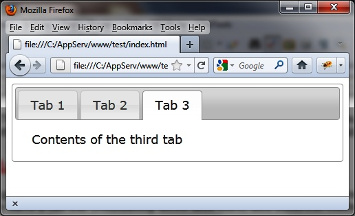
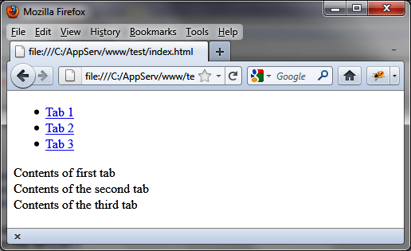

{% include JB/setup %}
{% raw %}
<div>
<div class="calibre13"></div><div class="book" title="Chapter 2. Tabs"><div class="book"><div class="book"><div class="book"><div class="calibre13"></div><h1 class="title1"><a id="tabs" class="calibre1"></a>Chapter 2. Tabs</h1></div></div></div><p class="calibre7">HTML pages with tabs have become common in current websites. Tabs
  allow you to group a site’s information by topic—this allows users to find
  relevant information quickly and easily by selecting the relevant
  tab.</p><div class="book" title="Basic Principles of Tabs"><div class="book"><div class="book"><div class="book"><h1 class="title2"><a id="basic_principles_of_tabs" class="calibre1"></a>Basic Principles of Tabs</h1></div></div></div><p class="calibre7">Suppose we want to write the HTML code to display the tabs shown in
    <a class="ulink" href="ch02.html#tabs_in_an_html_page" title="Figure 2-1. Tabs in an HTML page">Figure 2-1</a>. We have a tab bar (containing
    three tabs here) and different content for each tab.</p><div class="book"><div class="figure"><a id="tabs_in_an_html_page" class="firstname"></a><div class="book"><div class="book"><a id="I_mediaobject2_d1e822" class="firstname"></a></div></div><p class="title4">Figure 2-1. Tabs in an HTML page</p></div></div><p class="calibre7">To create this type of page using jQuery UI, we need the
    following:</p><div class="book"><ul class="itemizedlist"><li class="listitem"><p class="calibre7">A global &lt;div&gt; block enclosing the whole</p></li><li class="listitem"><p class="calibre7">A &lt;ul&gt; element to form the tab bar</p></li><li class="listitem"><p class="calibre7">A &lt;li&gt; element for each tab</p></li><li class="listitem"><p class="calibre7">A &lt;div&gt; element for each window inside tabs</p></li></ul></div><p class="calibre7">Here is the code to create the page shown in <a class="ulink" href="ch02.html#tabs_in_an_html_page" title="Figure 2-1. Tabs in an HTML page">Figure 2-1</a>:</p><a id="I_programlisting2_d1e847" class="firstname"></a><pre class="programlisting">&lt;script src = jquery.js&gt;&lt;/script&gt;
&lt;script src = jqueryui/js/jquery-ui-1.8.16.custom.min.js&gt;&lt;/script&gt;

&lt;link rel=stylesheet type=text/css
      href=jqueryui/css/smoothness/jquery-ui-1.8.16.custom.css /&gt;

&lt;div id=tabs&gt;
  &lt;ul&gt;
    &lt;li&gt;&lt;a href=#tab1&gt;Tab 1&lt;/a&gt;&lt;/li&gt;
    &lt;li&gt;&lt;a href=#tab2&gt;Tab 2&lt;/a&gt;&lt;/li&gt;
    &lt;li&gt;&lt;a href=#tab3&gt;Tab 3&lt;/a&gt;&lt;/li&gt;
  &lt;/ul&gt;
  &lt;div id=tab1&gt;Contents of first tab&lt;/div&gt;
  &lt;div id=tab2&gt;Contents of the second tab&lt;/div&gt;
  &lt;div id=tab3&gt;Contents of the third tab&lt;/div&gt;
&lt;/div&gt;

&lt;script&gt;

&lt;/script&gt;</pre><p class="calibre7">If you open this page in a browser (<a class="ulink" href="ch02.html#the_tabs_are_not_displayed_in_the_html_p" title="Figure 2-2. The tabs are not displayed in the HTML page as expected">Figure 2-2</a>), you’ll see that it
    does not appear quite as planned. For the results we want, we have to
    specify that we’re using the jQuery UI <code class="literal">tabs
    ()</code> method.</p><p class="calibre7">Add the following line (shown in bold) in the &lt;script&gt; of the
    page to call the jQuery UI tabs method for managing an HTML element with
    tabs:</p><a id="I_programlisting2_d1e858" class="firstname"></a><pre class="programlisting">&lt;script&gt;

<span class="firstname"><strong class="userinput">$("#tabs").tabs ();</strong></span>

&lt;/script&gt;</pre><p class="calibre7">The page will appear with tabs.</p><p class="calibre7">The <code class="literal">tabs ()</code> method is one of
    several jQuery UI methods used on a jQuery class object, returned by the
    <code class="literal">jQuery ()</code> function. The elements of the
    associated list (indicated by the selector) are then transformed into
    tabs. When a user clicks a tab, jQuery UI will automatically and
    transparently manage the switch to that tab.</p><div class="book"><div class="figure"><a id="the_tabs_are_not_displayed_in_the_html_p" class="firstname"></a><div class="book"><div class="book"><a id="I_mediaobject2_d1e877" class="firstname"></a></div></div><p class="title4">Figure 2-2. The tabs are not displayed in the HTML page as expected</p></div></div></div></div></div>

{% endraw %}

